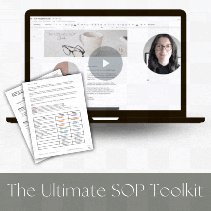

How to Prepare Your Business Before Hiring Your First Assistant
*Note: this blog is part one of a series on systems and processes to set up before you hire
So you’re ready to hire an assistant?
First, congrats! That’s an exciting milestone to hit as a business owner.🎉

Hiring help is a big step and it can bring a lot of relief, but only if your business is prepared for it. If things are scattered behind the scenes, a new hire can actually create more confusion, instead of giving you the breathing room you were hoping for. Not the goal!
The good news is you just need enough structure that someone can step in, understand what you’re trying to accomplish, and confidently take work off your plate.
Let’s walk through the simple steps to get your business ready so your first hire becomes a real asset from day one!
But first! Have we met?
Hello! Rachael here (she/her) 👋🏻Fractional COO and self-proclaimed systems nerd of Hey Rachael Consulting, obsessed with making your life feel easier.
After transforming my first business from a burnout black hole into a streamlined success, I never looked back! And over the last 5 years I've helped 100+ clients do the same behind the scenes. Whether you’re looking to integrate systems for the first time, or level up your organization game - I've got you friend.
Let's jump in!
Map Out Your Current Tasks
List out everything you touch in a week. Big things, the random little admin things, all of it. Start to braindump this out in one list. You’ll start to notice some patterns and this gives you a clear picture of:
- What you can delegate immediately -
The stuff you don’t like and aren’t good at is usually a good place to look first. - What should stay on your plate -
The stuff you really enjoy and want to keep doing. This usually falls into sales, client communication + relationship building, and the actual service you provide. - What’s slowing you down the most behind the scenes and causing some big bottlenecks?
Which leads us to the most important step…
Identify the Gaps
Once you’ve mapped out your weekly workload, it becomes easier to spot where things are breaking down and bottlenecking! These are the areas where the right hire (and stronger systems) will make the biggest immediate difference.
Here are a few common places where gaps show up:
- New leads sit in your inbox for days because you don’t have an intake workflow or process
- Follow-up emails happen inconsistently (at best)
- You’re forgetting which clients need what because everything lives in your head
- Project updates slip through the cracks since there’s no tracking system
Sound familiar? You probably need a better client management system. See more about what a CRM does and how to use it here!
Or maybe this is more your situation?
- Your daily to-do list feels endless and disorganized
- Repetitive admin tasks eat up time you want to spend on higher-level work
- You often think “I know I need to do something… but I can’t remember what”
- You’re checking multiple tools or notebooks to track what’s happening every day, or just winging it from your head.🥴
If these feel familiar, your foundation needs attention before you plug someone into it!
A clear project management system makes it much easier for someone else to support you without needing constant reminders.
→ Read more about the foundations of project management tools here
TLDR:
A Client Management tool handles all your client stuff (like contracts, payments, scheduling, onboarding, offboarding), and helps create an amazing white glove client experience.
A Project Management tool handles all your daily tasks, SOPs, resources, and client projects, keeping everything out of your head and in 1 central place, so it’s easy for everyone to know what they are working on and when.
Start Simple SOPs
SOP stands for Standard Operating Procedure. It's basically a fancy name for a process that ensures everything runs super smoothly behind the scenes.
When you’re the only database holding all the details in your head, how can someone else help, if they don't know what to do, or how to do it?
SOP’s lay out the step-by-step moves to get things done right, EVERY time.
So even when you aren't in front of the computer, your assistant or team can handle all the details without pinging you with a million questions!
It also makes it way easier to delegate tasks + projects, because you don’t need to explain yourself every single time.
Remember in Step 1 you started to work on a braindump of all the stuff you do every week? That’s what we are focusing on. And, we wanna keep it simple to start! These don’t have to be complicated multi-page documents for every task.
Think:
- A quick Loom video for sending contracts + invoices - record this the next time you send a proposal and boom you’re done.
- A checklist for how to onboard clients - put this together the next time you onboard as you go through the steps, and then you won’t have to think about it again!
- Step by step how to post on your blog (ahem) - you can take screenshots while you work, or record another Loom video walking through step by step.
These small SOPs make onboarding smoother, and give your new hire confidence that they can do what you ask, without feeling confused or you needing to give even more time to explain the process again and again.
Remember: Your Hire Can Help Build This With You
You don’t need every system locked in before your assistant starts. In fact, trying to build everything in a vacuum usually leads to processes that don’t match how you actually work day to day. We gotta leave some wiggle room!
A great hire will help you shape things as you go. They can:
- Document steps while they learn them -
An especially helpful process if your assistant is learning something new you haven’t tried yet. - Help clean up workflows and organize tools as they work through them -
They can also help point out inefficiencies you might not see, having a second set of eyes on your process. - Take ownership of recurring tasks and refine those processes over time so it’s super smooth 🧈
Your job is to make day one less chaotic and give them enough clarity so they can contribute without guessing. The rest should evolve naturally as you work together!
Setup First, Thank Yourself Later
If you’re preparing for your first hire, having a few SOPs ready is one of the best ways to reduce stress and make the transition smoother.
A standard way of doing something, that anyone can understand and follow. So even when you aren't in front of the computer, it's super easy for others to handle the work...without needing you!

📝If you want templates that make this whole process easier, my SOP Toolkit walks you through exactly what to document, how to document it, and how to create the first version of your SOPs without wasting hours trying to figure it out on your own!
Now that your processes are set up, hop on over to Hey Rachael to read on for our take on the people side of the hiring process.
<HeyrachaelYou’ve Built the Systems. Now Prep for Your First Hire >
And in the meantime, if you have any questions? Come find me on Instagram or my Website here and give a shout! I’m here for you.